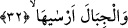
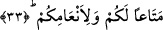

yeryüzünde oturmak, yerin sâdece yayılması ve döşenmesiyle mümkün olmaz. Ayrıca
yeme ve içme yerlerinin gösterilmesi sûretiyle yaşama olayının da düzene konması
gerekir.
32. Ve dağları sağlam bir şekilde yerleştirdi.
Âyetteki “ersâ” fiili “dağları sâbitleştirdi, sallanmasın diye yeryüzünü dağlar
vâsıtasıyla sâbit hale getirdi” demektir. Bu ifâde, bir gerçeği ortaya koymak içindir.
Buna göre ifâde; Kur’an-ı Kerim’in bir çok yerinde dağlara nisbet edilen bu
sâbitleştirme fiilinin dağların bizzat kendilerinden kaynaklanmadığını, aksine bunun
Allah’ın sâbitleştirmesi ile olduğunu, Allah Teâlâ’nın böyle bir fiili olmasaydı dağların
yeryüzünü sâbitleştirmesi bir yana kendilerinin bile yeryüzünde sâbit biçimde
kalamayacaklarını vurgulamaktadır.
33. Kendiniz ve hayvanlarınız için bir faydalanma olmak üzere.
“Kendiniz ve hayvanlarınız için bir faydalandırma” ifâdesi, sebep bildiren mef’ûldür.
Buradaki “metâan” kelimesi, “temtî’/faydalandırma, yararlandırma” anlamındadır.
“En’âm”, “neam” kelimesinin çoğuludur. En’âm denilince arapçada kişinin otlayan
mal varlığı akla gelir. Şu halde en’âm “davarlar” anlamınadır.
es-Sıhah isimli eserde ifâde edildiğine göre en’âm kelimesi ile daha çok “develer”
kasdedilir. Ancak en’âm kelimesinden burada kasdedilen deve, sığır, koyun ve keçi
olmak üzere bütün davarlardır. Buna göre âyete mânâ vermek gerekirse şöyle deriz:
Allah bütün bunları size ve davarlarınıza bir yararlandırma ve menfaat olarak yaptı.
Çünkü yukarda bahsedilen yeryüzünün yayılması, döşenmesi, otun ve suyun
çıkarılmasının faydaları insanlara ve onların ellerindeki hayvanlarına dönüktür.
Çünkü “mer’â” insanın ve başkalarının yemiş olduğu yiyeceklere delâlet eden bir
isimdir. Bu kelimenin hem insan ve hem de hayvanların yiyeceklerine delâlet etmesi,
“er-ra’y” kelimesinin istiâre yoluyla mutlak olarak “yenilecek şey” anlamında
kullanılmasından dolayıdır. Bu istiâreli kullanım, tıpkı yular takılan yer anlamına gelen
“el-mersen” kelimesinin “burun” anlamına kullanılması gibidir. Bu nedenle demişlerdir
ki: Allah Teâlâ bu âyet-i kerimede “suyu ve otu” zikrederek yeryüzünden elde edilen
şeyler içinde tuza varıncaya kadar faydalanılabilecek ne varsa hepsine işâret etmiştir.
“Tuza varana kadar” diyoruz çünkü tuz sudan elde edilmektedir.
Utbi diyor ki: “Oradan suyunu ve otunu çıkardı” ifâdesi az kelime ile çok mânâ ifâde